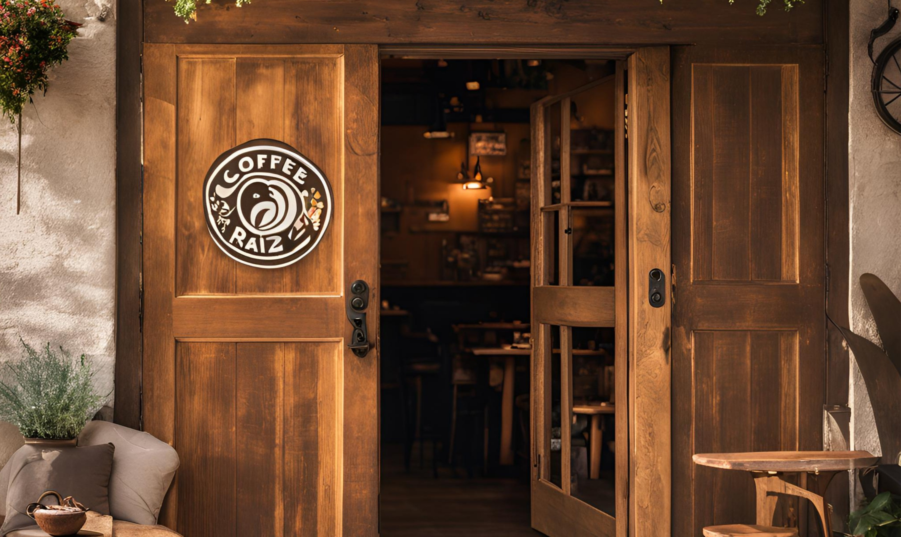

Nosotros
Bienvenido a Coffee Raíz
En Coffee Raíz, nos dedicamos a ofrecer el mejor café artesanal, cultivado con amor en las montañas más altas de Colombia. Nuestra pasión es compartir la rica tradición cafetera del país con el mundo, ofreciendo una experiencia única en cada taza.
Nuestra Historia
Comenzamos como una pequeña finca familiar dedicada a la producción de café de alta calidad. Con el tiempo, nuestra pasión por el café creció, lo que nos llevó a abrir nuestra primera tienda en el corazón de la ciudad. Hoy, somos conocidos por nuestra calidad y el sabor inconfundible de nuestros productos.
Conoce a nuestro equipo
Jesús García
Fundador y experto en café. Con una gran pasión por el cultivo y la producción de café, Jesús ha dedicado su vida a hacer crecer esta empresa.
Brenda Martínez
Maestra tostadora. Brenda se encarga de asegurarse de que cada grano de café sea tostado a la perfección, asegurando un sabor único en cada taza.
Carlos Rodríguez
Barista jefe. Carlos es responsable de crear esas increíbles bebidas con café que hacen que cada cliente se sienta especial.
Nuestro compromiso
En Coffee Raíz, nos preocupamos por la sostenibilidad, la calidad, y el bienestar de nuestros productores. Trabajamos estrechamente con los caficultores para asegurar que cada taza que servimos sea 100% ética y respetuosa con el medio ambiente.